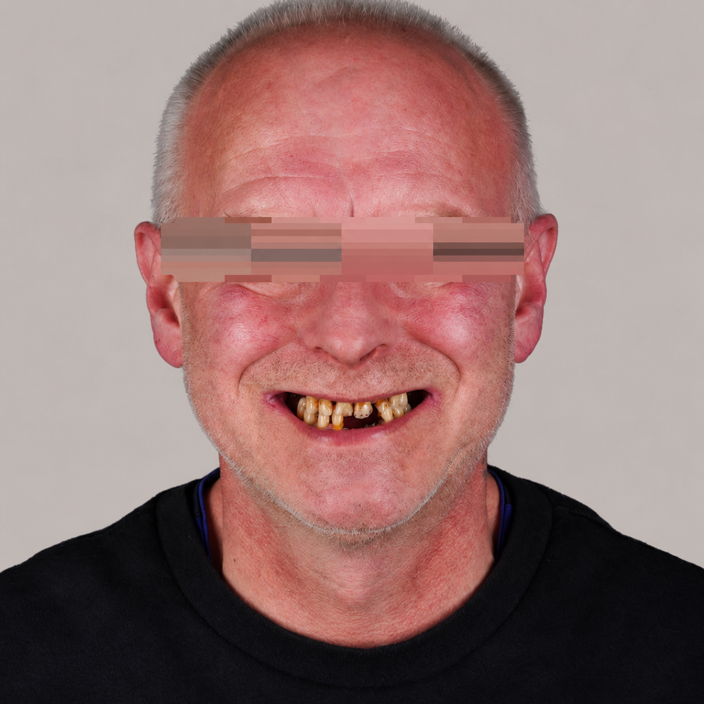
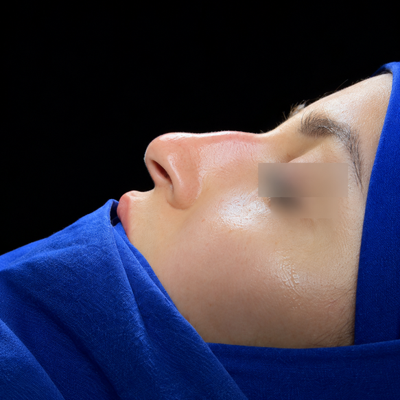
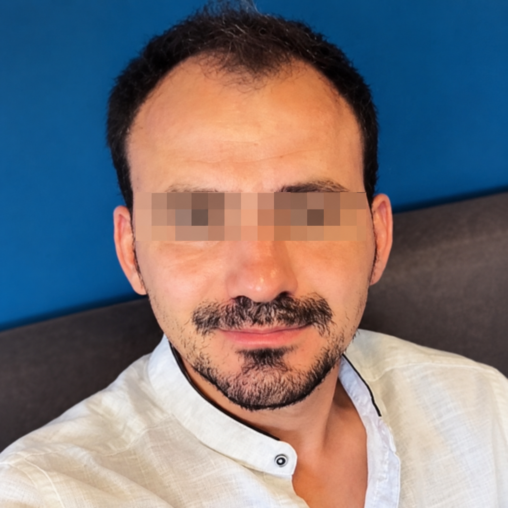
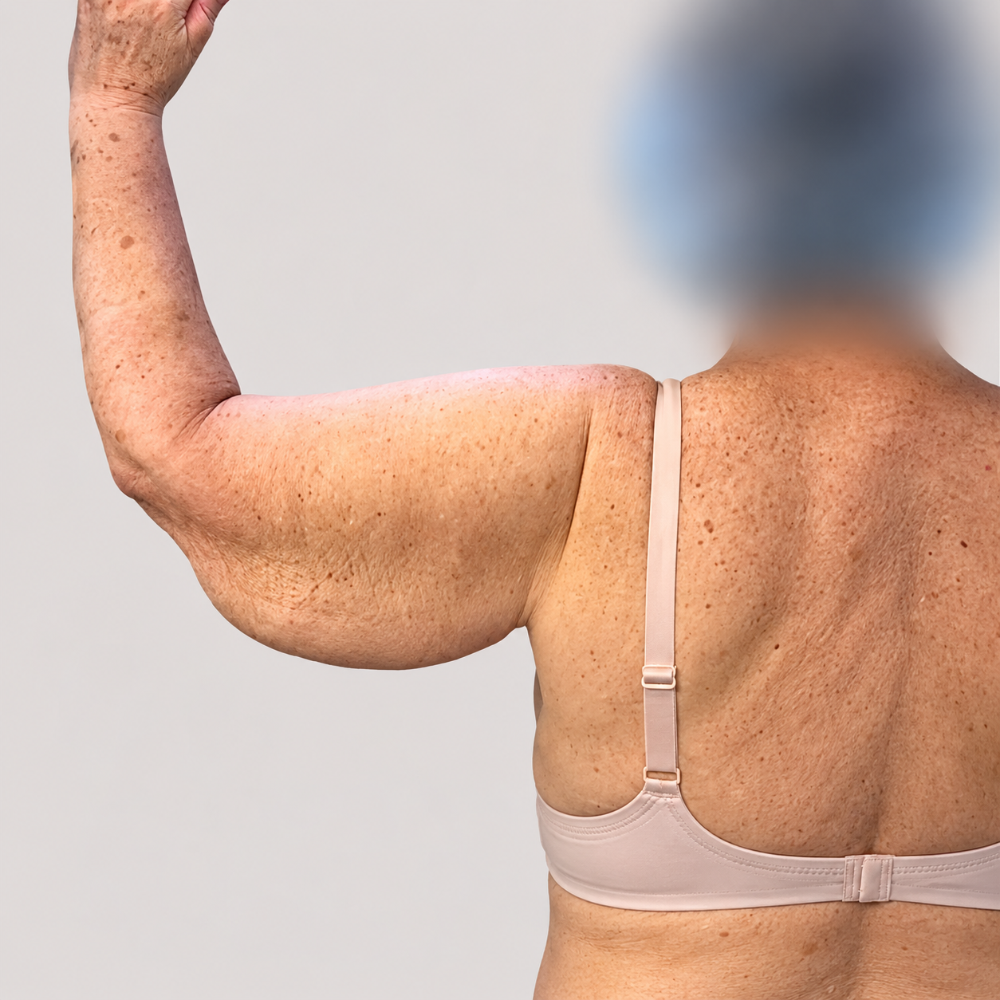
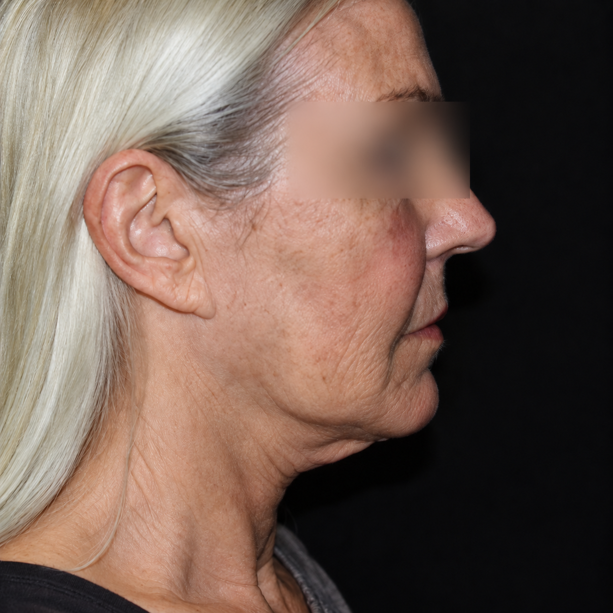
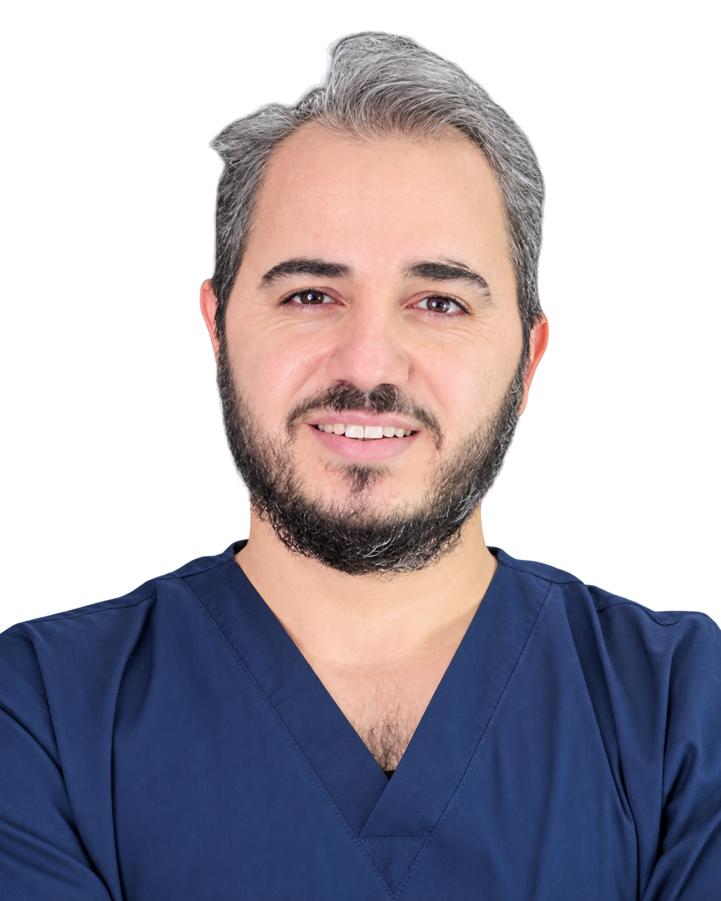
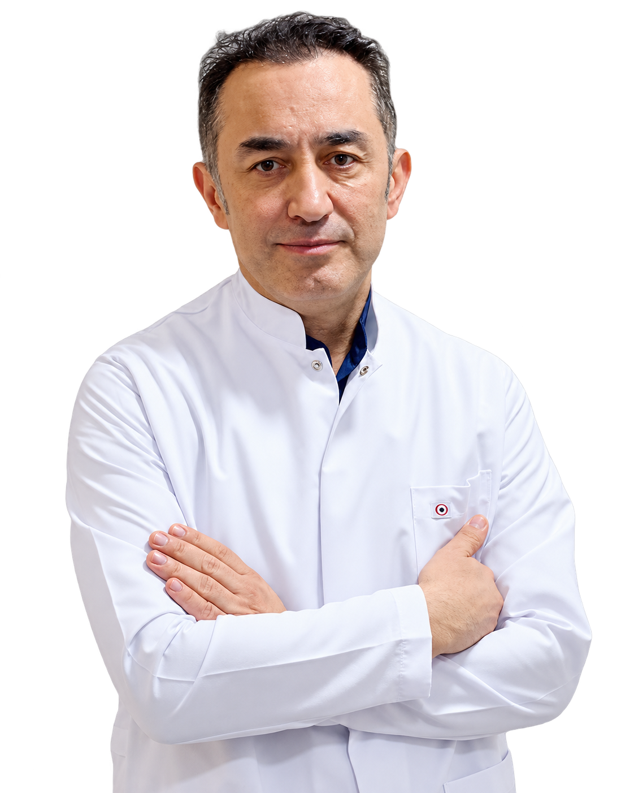
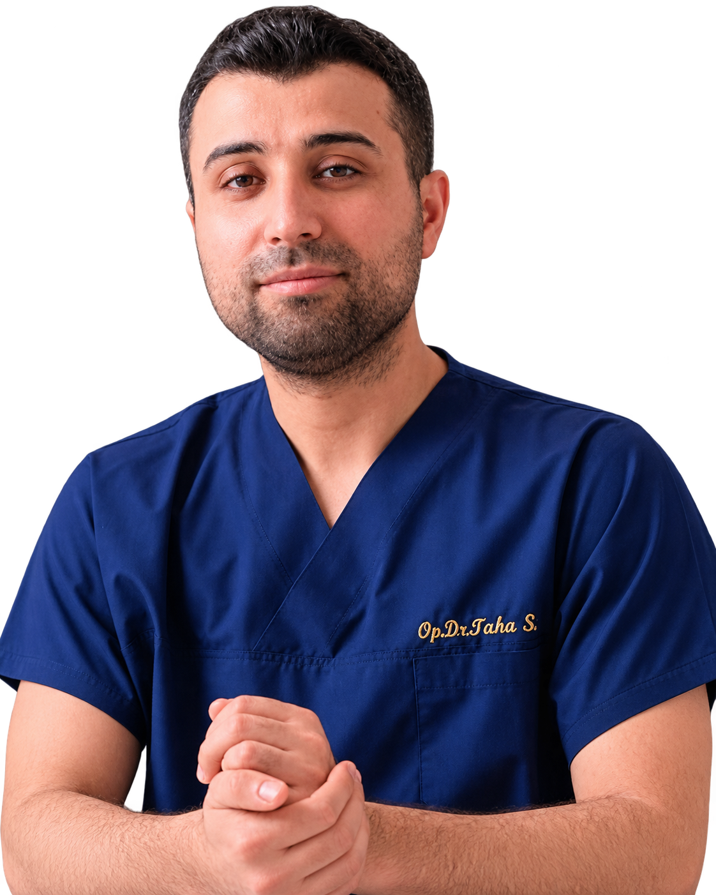

DENTISTRY · SMILE MAKEOVER
A smile designed around the person.
Treatment planning can combine aesthetics, function and bite considerations — with the patient involved in every decision.

Drag to compare before and after
REAL PATIENT RESULTS
Follow the journey through real before-and-after examples. Drag each slider to see the change for yourself.
DENTISTRY · SMILE MAKEOVER
Treatment planning can combine aesthetics, function and bite considerations — with the patient involved in every decision.

Drag to compare before and after
FACE · RHINOPLASTY
A result-focused approach built around proportion, facial harmony and an outcome that still feels like the patient.

Drag to compare before and after
HAIR · TRANSPLANT
From donor-area assessment to hairline design, the journey is built around natural direction, density and long-term appearance.

Drag to compare before and after
BODY · ARM LIFT
This example shows an arm lift, but UH Turkey also coordinates a wider range of body procedures designed around contour, comfort and confidence.

Drag to compare before and after
FACE · FACIAL REJUVENATION
This result goes beyond neck liposuction alone and shows a wider facial refinement. For transparency, makeup is applied in the after photo.

Drag to compare before and after
MEET THE DOCTORS
Every transformation starts with the people planning and performing it. Meet the doctors behind the results.



WHY UH TURKEY
Yes. On request, UHTurkey can coordinate a five-star hotel stay and private transportation throughout your treatment journey, leaving you free to focus on your procedure and recovery.
Your case is reviewed with the relevant medical team using the information, photographs and records you provide. The final treatment plan is confirmed by the treating doctor after clinical assessment.
Yes. A UHTurkey coordinator remains your point of contact for appointments, logistics, communication and follow-up, while medical decisions remain with your treating doctor.
When appropriate, a remote pre-assessment can be arranged so you can discuss your goals, suitability and next steps before travelling. Final recommendations may still require an in-person examination.
START A CONVERSATION
Tell us what you are considering. We’ll help you understand the treatment, the next steps and, if you want it, the full Istanbul stay around it.
UH TURKEY
Select the language you would like to use. You can change it again at any time from the header.